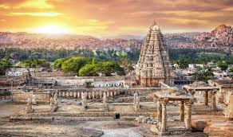
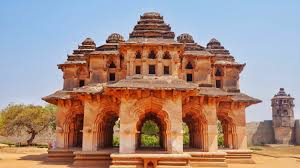
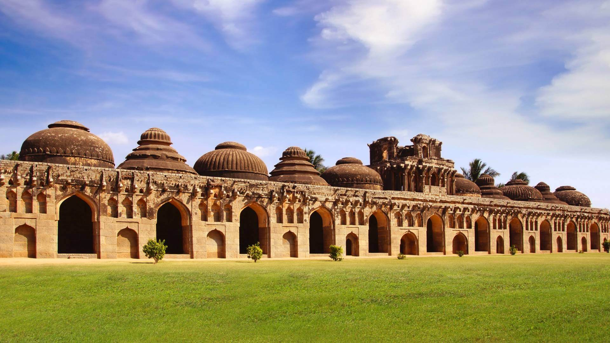
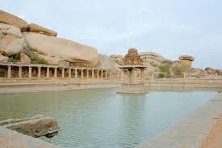
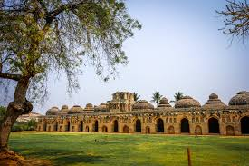
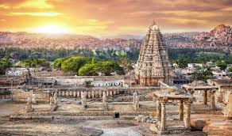
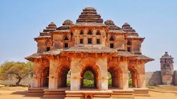
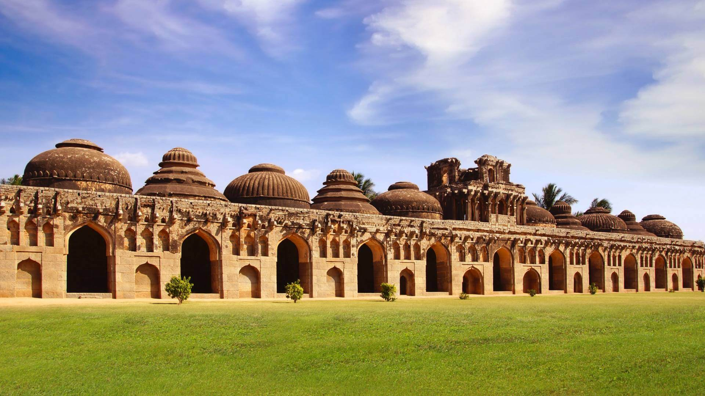
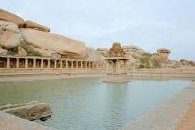
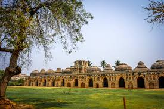

Virupaksha Temple
Living temple and main landmark near Hampi Bazaar.
Hampi is a UNESCO World Heritage Site where huge boulders, banana fields and temple ruins sit together along the Tungabhadra River. It was once the rich capital of the Vijayanagara Empire; today it feels like a mix of open-air museum and chill village.
You move between clusters of ruins, climb hills for sunrise and sunset and stay in simple guesthouses. Many travellers pair Hampi with Goa, Gokarna or coastal Karnataka as a contrast to beaches.
Living temple and main landmark near Hampi Bazaar.
Iconic stone chariot and musical pillars by the riverside.
Short hikes for wide views, best at sunrise or sunset.
Palace area with baths, stepped tanks and Indo-Islamic details.
Cover Virupaksha, Hemakuta, Krishna Temple, Sasivekalu Ganesha and nearby sites.
Climb Matanga or Hemakuta Hill for boulder and river panoramas.
Short round boats on calm stretches of the Tungabhadra.
You can see the basics in 2 days but 3+ is more relaxed.
Short trip
Balanced pace
4–6 days
Close to Virupaksha Temple and main ruins, basic guesthouses and homestays.
Best if you want to walk to sunrise points.
Quieter village-side stays with paddy fields and boulder views.
Good for longer, slower trips.
More conventional hotels with better transport links.
Works if you want comfort and bus / train access.
 










Simple habits for heat, walking and temples.